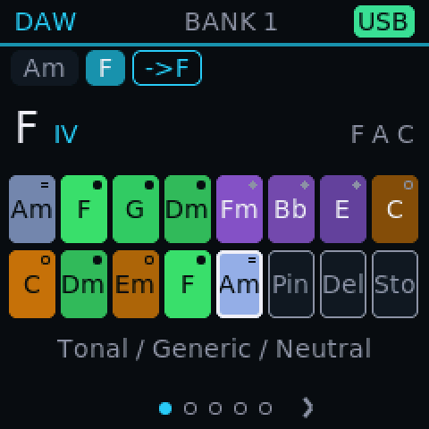
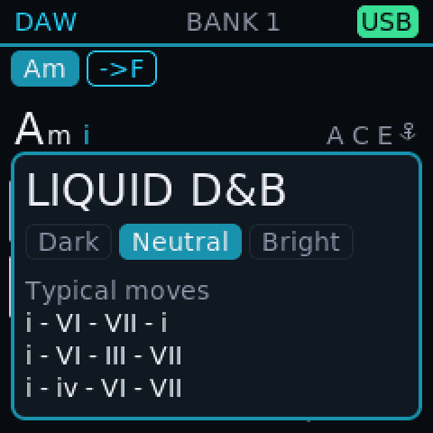
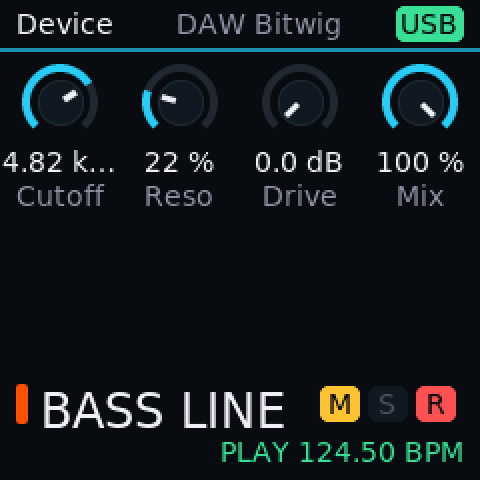
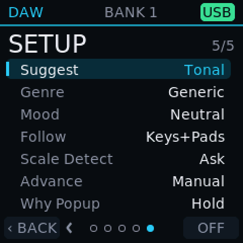
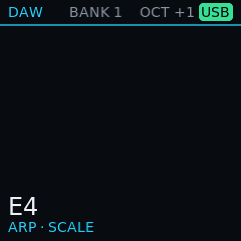

DAW
A controller with ideas.
The DAW build puts the pads, keys and knobs at the service of your session: it suggests chords, names what you play, shares tempo and scale with your DAW and sends clock to other gear.
What it does
- 1
Harmony Helper Test build
The pads show the seven best chords to play next, coloured by how well they fit, with the chords of your scale underneath.
- 2
39 genres, your mood Test build
Pick a genre and a mood and choose how bold the suggestions get: Safe, Tonal or Bold.
- 3
It names what you play Test build
Chords played on the keys are named, even odd ones like 7#9, 6/9 or slash chords, and it can notice when you move to another scale.
- 4
Scale and Chord Test build
Lock the keys to a scale and play full chords from single keys; a DAW can set the scale too.
- 5
Talks to your DAW Test build
Pads show your tracks' and clips' colours, the screen shows the selected track, knobs report how far and fast they turned, and TAP sets the DAW's tempo.
- 6
Clock for other gear Test build
Sends MIDI clock, Start, Stop and Continue. Clock in over USB is built; DIN and Bluetooth clock are not available yet.
- 7
USB audio Test build
The keyboard shows up as a stereo input, so your computer records the sound over the same cable, with a gain setting.
- 8
Capture what you just played Test build
Oscuro remembers your last notes; one press turns the phrase into a sequencer pattern.
On the screen




